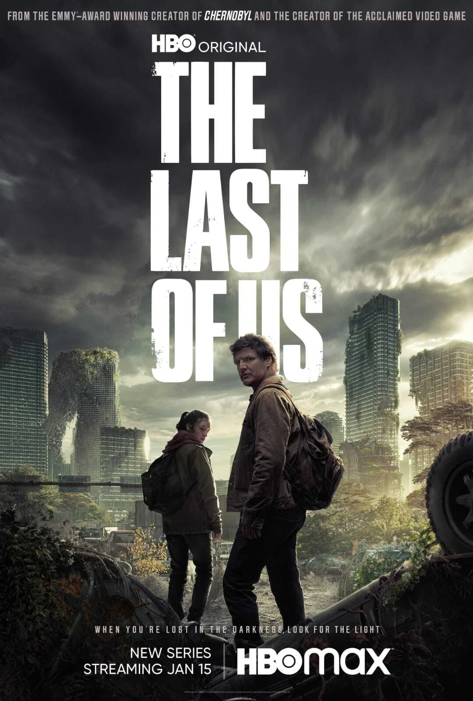
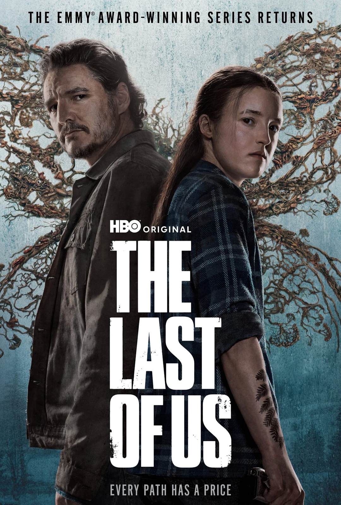
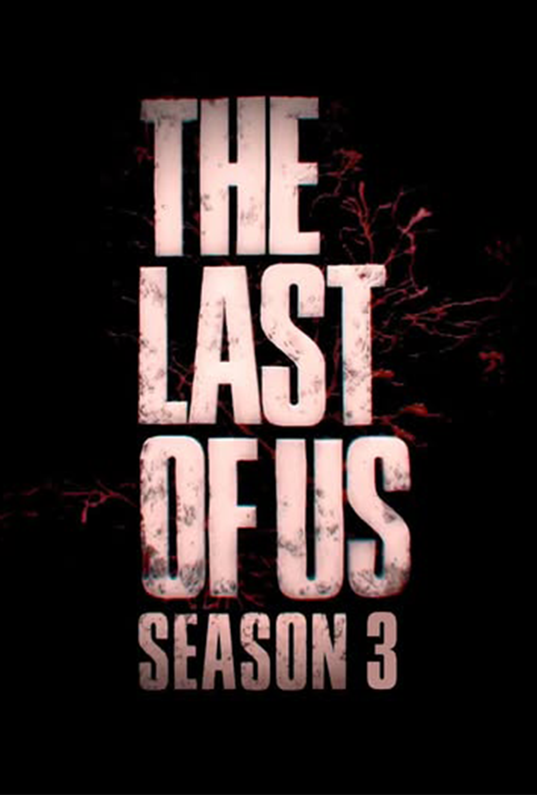

Temporada 1
- Fecha de estreno: 15 de enero de 2023
- Episodios: 9
- Sinopsis: Esta temporada adapta el primer videojuego. Sigue a Joel y Ellie mientras cruzan EE.UU. en un mundo postapocalíptico lleno de peligros e infectados. Su relación se vuelve el centro emocional de la historia.
- Recepción: Fue un éxito de crítica y audiencia, convirtiéndose en una de las series más vistas de HBO.

Temporada 2
- Fecha de estreno: 13 de abril de 2025
- Episodios: 7
- Sinopsis: Ambientada cinco años después, sigue las consecuencias emocionales y éticas del primer juego. Introduce nuevos personajes importantes.
- Novedades: Nuevos actores como Kaitlyn Dever e Isabela Merced se suman al elenco. La temporada se emite hasta mayo de 2025.

Temporada 3 (Confirmada)
- Estado: Oficialmente confirmada
- Fecha de estreno: Por anunciar
- Detalles: Continuará la historia tras los eventos de la segunda temporada. Se esperan más episodios basados en el segundo videojuego.
